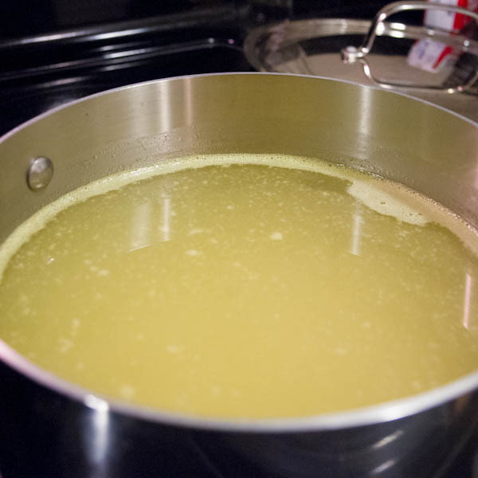

Benjamin W. Herila

- Cooking
- Kitchen Things
- Soups
- Italian Avgolemono
- French Onion
- Green Split Pea
- Roasted Pumpkin
- Stracciatelle
- Wild Mushroom
- White Bean Chicken Bacon
- Hot and Sour Soup
- Indian Red Lentil
- Aarshe Saak
- Chicken Stock
- Chicken Noodle
- Roasted Tomato Basil
- Chicken Tortilla
- Chicken & Sausage Gumbo
- Entrées
- Dessert
- Breakfast
- Salads
- Sides
Chicken Stock
Makes about twelve 1-cup servings.
Ingredients
| 12 C | water |
| 1 | whole roasted chicken |
| 1/2 lb. | chicken feet (optional) |
| 1/2 lb. | carrots |
| 1/2 lb. | celery |
| 2 | bay leaves |

Preparation
My local Asian market sells chicken breast frames, which are whole chickens with most of the meat removed (but still some bits attached). This makes it really easy and inexpensive to get lots of bones to make chicken soup with. If you're starting with a whole chicken, cut off most of the meat and reserve it. If you don't feel like cutting the meat off of a raw chicken, you can also roast the chicken in the oven and then cut most of the meat off. I don't recommend cooking the whole chicken in the pot with the broth, because you will not get the flavor out of the bones, which is you really need to have in a good chicken stock.
To that point, as soon as you have your raw chicken bones (again, with most of the meat removed), the first thing you will want to do is take a large meat cleaver and hack the bones to pieces. Ideally you want 3-4 fragments. You are going to end up with bone fragments in the soup, which are very hard to remove later. Don't worry, we'll be straining the soup to remove the bones and bone fragments before adding back the meat, and discarding the stuff we strain out once all the flavor of that stuff has made its way into the stock. This is why you removed most of the meat before we hacked up the chicken, right?
Once you've got your chicken carcass, put it into a huge pot with a dash of oil. Cover tightly and simmer on medium heat for about 10 minutes. Lots of flavorful juices should come out of your chicken bones! Keep them in the pan. Add the veggies and simmer for 10 minutes longer.
If you're using chicken feet (which will result in a much richer gelatinous stock), make sure the skin is removed. As you add each piece to the pot, snip off the toes into your pot so that you're cooking the toes separately from the feet. Lots of gelatin will come out of the knuckle joints and this will make your stock extremely luxurious! At this point, add the chicken feet.
Also, add the bay leaves and any salt (recommend: 1 tsp.) and pepper (recommend: 1 Tbsp. ground black pepper) to taste.
Now simply cover all the bones with water (usually about 12 C.) and simmer for 2-3 hours, skimming the foam off the surface of the soup every 20-30 minutes. Do not let the stock come to a rolling boil or else it will become cloudy with fat and you will have to clarify it later.
When you are satisfied that your stock is just right, strain it through a fine-mesh sieve and discard the solids. Don't try to save the little bits of chicken meat as they will be devoid of flavor anyway! That's why we reserved the chicken meat at the start, remember?
You can use the stock in a soup immediately, otherwise transfer it to the refrigerator. A layer of fat will accumulate on the top of the stock within 12 hours or so, and you can lift off and discard that fat (it's OK if you leave some bits behind). You should remove the fat before freezing the stock, as it will be hard to remove the fat if the stock has frozen.
Roasted Chicken Stock
If you want roasted chicken stock then you should roast the chicken bones in a 400-degree (F) oven until they are browned and there are some bits stuck to the bottom of your roasting pan. Then proceed as above, sauteeing the roasted chicken bones instead of raw ones.

This work is licensed under a Creative Commons Attribution-ShareAlike 3.0 Unported License.